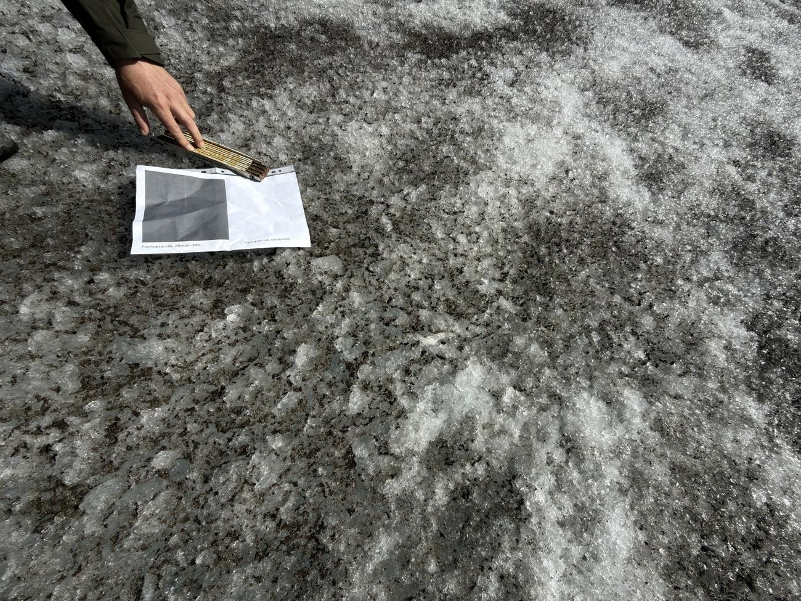

To pletter is, få meter fra hinanden
I august 2026 lagde en gruppe forskere felter ud på en gletsjer i Østgrønland. Nogle felter blev dækket med mørkt sediment, andre fik lov at ligge som ren is. Så satte de pinde i og ventede seks dage.


Resultatet kunne ses uden at måle: den lyse plet stod som en lille forhøjning, fordi den havde smeltet langsommere end alt omkring. Med pindene blev det til tal.
Albedo er det eneste der adskilte de to felter. Samme sol, samme luft, samme is nedenunder. Den mørke overflade kastede mindre lys tilbage, absorberede mere energi — og smeltede dobbelt så hurtigt.
Ikke en detalje…
Grønlands indlandsis taber masse på to måder, som vejer omtrent lige tungt. Cirka halvdelen sker på overfladen, hvor sollyset smelter is og sne. Den anden halvdel sker ved at isen flyder ud i havet og kalver som isbjerge.

Albedo styrer den første halvdel. Og albedo er noget I kan måle — med en telefon og et stykke papir.
Mål albedo i skolegården
Metoden forskerne brugte på isen virker lige så godt på asfalt, græs og fliser. I skal bruge en telefon, et printet referencekort og ti minutter udenfor.

Selve fremgangsmåden — de fem trin, forventede værdier for asfalt, græs og sne, og spørgsmålene til klassen — står i øvelsesvejledningen. Den kan printes som elevark.
Se det samme sted fra rummet
Satellitten Sentinel-2 måler albedo over hele Jorden hver femte dag. Nu hvor I har målt jeres egen skolegård, kan I slå den op — og sammenligne.
Sentinel-2 ser Jorden i ti farvebånd og beregner albedo ud fra fem af dem. Hver måling dækker et felt på 10 × 10 meter. Det lyder småt, men prøv at se skolegården for jer: hvor meget asfalt, græs, tag og grus ligger der inden for ti meter?

Det I sandsynligvis opdager
Jeres asfalt målte måske 0,12. Satellitten siger måske 0,25 for feltet. Ingen af jer tager fejl — I måler bare ikke det samme. Satellitten lægger alt sammen inden for sine ti meter: asfalten, græsplænen ved siden af, det lyse tag, cykelskuret.
Det hedder en blandet pixel, og det er et af de største problemer i al satellitovervågning. Man kan ikke se af tallet alene, hvad der ligger bagved.
Præcis samme fælde ramte forskerne på gletsjeren
Da målingerne fra Grønland første gang blev sammenlignet med satellitten, var de tre gange fra hinanden. Forskerne havde målt tæt på iskanten — et sted hvor mørke sedimentbånd, smeltevandskanaler og ren is ligger inden for få meter.
Flyttede man sammenligningen ind på en ensartet flade længere oppe, passede det: satellit 0,23 mod jordmåling 0,27. Ikke fordi instrumenterne blev bedre, men fordi man målte det rigtige sted.
Tilbage til isen — hvad betyder det for Grønland?
Nu har I metoden. Så kan I regne på det samme som klimaforskerne gør, med tallene fra gletsjeren.

Regn selv: hvor meget smelter der?
Energien der smelter isen, er den del af sollyset overfladen ikke kaster
tilbage: Q · (1 − albedo). Med sollyset på isen i august, smeltevarmen
for is og isens massefylde kan I regne jer frem til de 20 og 40 centimeter selv —
regneopgaven med alle tal står i øvelsesvejledningen.
Den onde spiral — hvorfor smeltningen forstærker sig selv
Når sne og is smelter, bliver støv, sod og sand liggende tilbage på overfladen. Det bliver koncentreret, overfladen bliver mørkere, albedoen falder — og så smelter det endnu hurtigere. Smeltningen forstærker sig selv.
Det er derfor der findes et bælte langs Grønlands vestkyst hvor isen er markant mørkere end omgivelserne. Det kaldes mørkezonen, det er vokset gennem de seneste årtier, og det er en af de ting der gør fremtidens afsmeltning svær at forudsige.
Hvad forskerne stadig ikke ved præcist
Urenhederne på isen er ikke jævnt fordelt, de skifter fra år til år, og en del af dem er levende — snealger vokser når det bliver varmere og gør isen mørkere. En klimamodel der regner med fast albedo, rammer derfor systematisk for lavt.
Og så er der den anden halvdel: isen der flyder ud i havet. Ved Sermilik løber Helheim Gletsjer ud i fjorden, hvor varmt atlanterhavsvand når helt ind til gletsjerfronten og smelter den nedefra. Den del kan et referencekort ikke måle — men den fylder lige så meget i regnskabet.
Gå med på gletsjeren
I har målt jeres egen asfalt, fundet stedet fra rummet, opdaget den blandede pixel og regnet på hvor meget der smelter. Så er der kun ét tilbage: at se det.
Mål gletsjeren med jeres eget værktøj
Sæt dronevideoen på pause et sted hvor både gryden og den lyse is er i billedet, og tag et skærmbillede. Læg det ind i albedo-appen — nøjagtig den samme, I brugte på skolegården. Markér vandet, markér isen ved siden af, og brug isen som reference.
Nu måler I grønlandsk albedo med jeres eget instrument. Og så er spørgsmålet igen det samme som i trin 2: hvor meget kan I stole på tallet? Billedet er taget skråt fra en drone, lyset rammer skævt, og kameraet har selv justeret eksponeringen undervejs. Diskutér hvilke af de fejlkilder der ville forsvinde, hvis I stod på isen med et pyranometer — og hvilke der ikke ville.